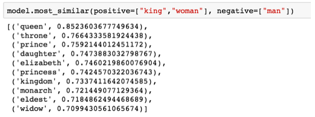
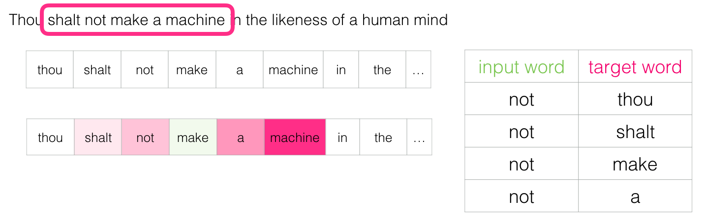

Feature Engineering is one of the important pillar of Machine Learning and Deep learning.When it comes to convert text to features we have lots of techniques like Tf-IDf,Bag Of Words,Word2Vec,Glove Vectors.Today we will discuss about Word2Vec.Word2Vec was the revolutionary technique.It brought big change in the field of Natural Language Processing.Word2Vec uses Neural Networks,this thing made it apart from other techniques.
In nutshell Word2Vec converts text to vector and then we put that vector as input to Neural Network
Let's start,We will understand Word2Vec in pieces.First we will start with the dimensions.What do we mean by dimensions in case of text?.
In case of text dimension represents quality or attribute ,for example we have data of student.
Here we can see each axis of graph is representing a quality of student.These axes are called dimensions of graph.Here i took only 3 dimensions because we can't plot a 4D graph.If we have more attributes or features or dimensions then can't plot it.But we have computers and they can understand it very well.Now we knows about dimensions let's move on to similarity.
As per the common sence how we can say that 2 things are similar or not?
Its simple by comparing their features we can say they are similar or not.If they have common features means they are same otherwise they are not similar.Here in case of computers they also almost same criteria.We have lots of mathematical techniques to compare ,today we will talk about Cosine Similarity.In cosine similarity we take inner product of 2 values that measures cosine angle between them.Let's take the following example.Here i took only 2 dimesions to make it simple.Here we have data of 2 students A and B.We are not considering values in graph,right now we are just understanding the intuition.If we want to compare student A and B then we need to take cosine of the angle between them.If cosine returns 0 it means they are totally same and if it returns value -1 then they are totally opposite.The key thing her is if we are getting value greater than 0 means their some features are different.
Now we will discuss about embeddings.As earlier we learnt how we can create vector and how we can put all qualities of and entity in vector.So in embeddings we transform each word of our text in a particular number of dimensions then we map all those vectors to a fixed number of dimensions like 50,100,200 etc.In embedding you will find similar vectors together.This is how it helps us in understanding similarity.
In following image we put various words in embedding .Now you can see how different words like man and king has some common traits(Each color represents a quality or dimension),woamn and girl also has some common features.As we can see a long red column it means that feature in common in all the words.
One of the amazing feature of word embedding is if we add or subtract words trained on embedding we will get aweosme results.Let's look at the following example

We can visualize this also.

Here as you can see the features of queen and king-man+woman are same.It shows that embeddings are good in understanding features.
Now as we have discussed about embedings now we will discuss the techniques used by Word2Vec.Word2Vec uses 2 techniques
1.Continuous Bag-of-words(CBOW)
2.Skip-gram
Before learning training process of Word2Vec,we will discuss about these techniques.
Continuous Bag-of-words(CBOW)
In nutshell is used to predict a word given surrounding text(context words).
Let's see how we train CBOW model.Before training we need to create dataset.For creating dataset we will set a window size let's take it 3.Now we will put first 3 words in context and 4th word will be our target word and 3 words after the target again will be our context .This is how we will convert it into supervised learning problem.Here you can see the example.In this example loves is our target word.
After creating dataset we will input this data in one-hot encoded form to a Neural Network ,we will use last layer as Softmax activation so neural network will predict word with the maximum probability.
 Predicting word animal using dog as input
Predicting word animal using dog as input
Continuous Bag-of-words model structure
Skip-gram
Skip-gram is opposite of CBOW,here we have single word and with the help of it we need to predict context words.Now we will create the dataset again but in little bit different format.

Here you can see our target word was not so we took 2 words before it and 2 words after it as context.Our window size here is 2.
Now if we take another word
Here you can see only 2 words created such a long dataset.So on our whole text,this will create millions of daatpoints that's not so efficient.
So we will use a special technique known as Negative Sampling.
In this technique instead of generating context words, we try to identify the relationship between words,we try to check whether they are neighbors or not?
It will transform our generative model to classification model. Here you can see how dataset got changed by using Negative Sampling.This technique reduced our processing time.
Here you can see how dataset got changed by using Negative Sampling.This technique reduced our processing time.
We are almost ready we just need to do a little bit change.As when we will create dataset using negative sampling ,all the rows will have output as 1 as our computer is reading text word by word so all of them will be neighbour.So to remove this loophole we will use negative samples,this samples will change the bias or you can say our target variable will have equal number of 0 and 1.
 After adding negative samples.Let''s look at training of Word2Vec.
After adding negative samples.Let''s look at training of Word2Vec.
For training process we will create 2 matrices, a embedding and context matrix.Now dimension of both matrices will be vocab_size*embedding_size(vocab_size means number of unique words in text,embedding_size means number of dimensions in which we want to put the data.)
We will read data from embedding matrix and its context words from context matrix ,multiply them and then apply sigmoid function.We will have the output probabilities and now check the error and update the weights.Its just like simple neural network's training process.
Hush!! we did it now we will see the code of it.We will do the coding part in our next part.
Checkout next part here.
References:
Jalammer.github.io
Image credits:Google